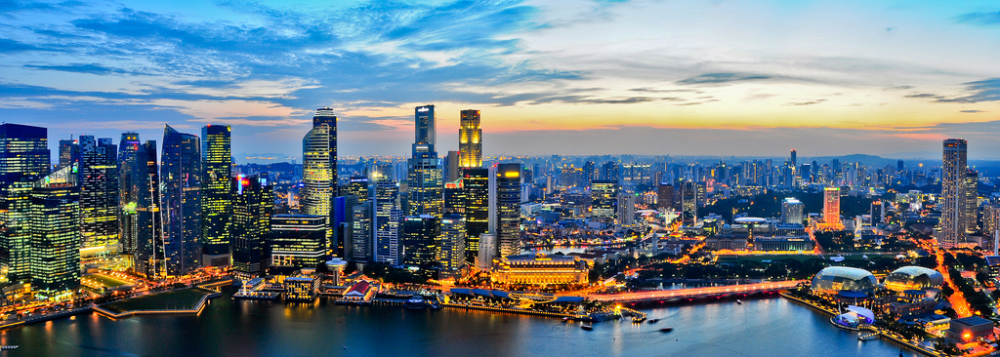
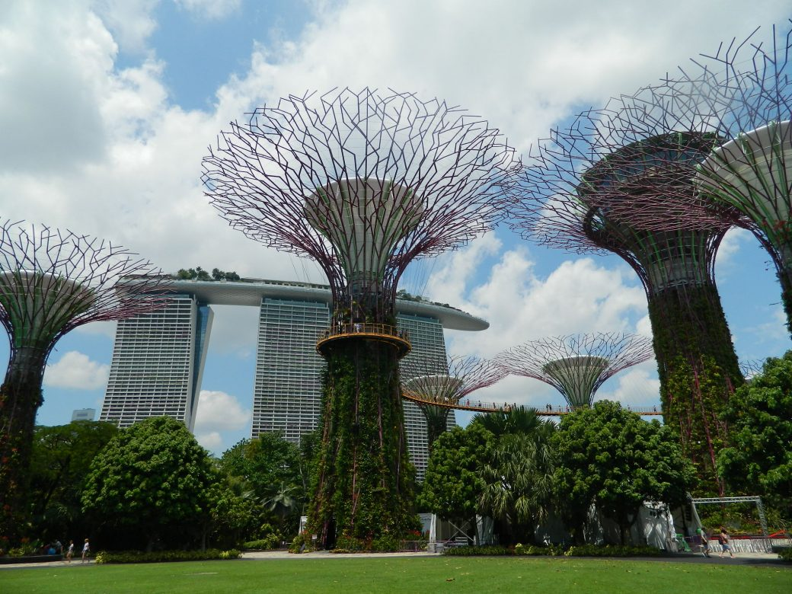
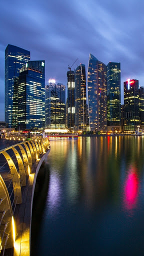

|  |
Orașul-stat SingaporeRepublica Singapore este un oraș-stat insular și cea mai mică țară din Asia de Sud-Est. Este situat la sudul Peninsulei Malay și a statului malaysian Johor și la 137 km în nord de ecuator. Conform unei analize publicate de Culture Trip în 2016, face parte din primele zece cele mai moderne orașe din lume. În prezent, Singapore este a doua țară ca densitate a populației, cu un total de 4.326.000 locuitori și o suprafață de 704 km pătrați. Ca turist vei descoperi locuri încântătoare, o istorie fascinantă și o diversitate culturală, care cu siguranță te vor impresiona. Împărțit în districte, fiecare cu propriile atracții turistice. Printre acestea se numară Financial District, unde se află clădiri moderne, Chinatown, care reprezintă partea culturală a orașului unde clădirile sunt în general foarte vechi, Arab Street care este dominată de „Moscheia Sultanului” - reprezintă locul de întâlnire a comunității arabe. Cea mai cunoscută stradă din Singapore este „Orchard Road” cu o lungime de 2.5 km. Zona este destinată cumpărăturilor și conține o mulțime de mall-uri și buticuri de unde se poate cumpăra aproape orice, fiind spațiul cu cea mai mare densitate a mall-urilor din lume. Înainte de a alege ca destinatie de vacanta Singapore trebuie însă să te documentezi foarte bine asupra legislației în vigoare; amenzile fiind foarte mari și se primesc pentru abateri aparent nesemnificative. Dacă ești prins scuipând pe stradă, va trebui să plătești o sumă de aproximativ 200$. De asemenea, în Singapore este dusă o politică foarte severă împotriva narcoticelor. |